Roll Transfer App
System Design and Documentation
This project is a concept for a manufacturing-focused application used to track paper rolls and manage transfers between departments. The system was designed using relational database planning, MVC architecture, and user-centered workflow thinking.
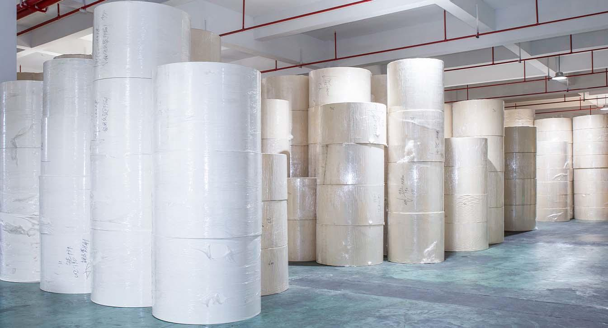
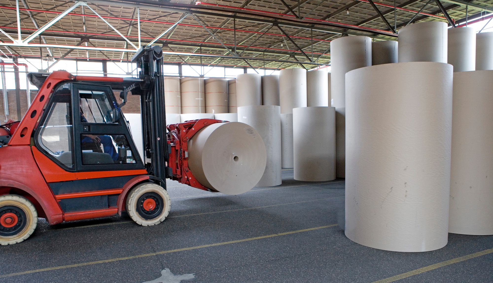
What problem this system is solving
The Roll Transfer App is designed to track paper rolls inside a production environment. Operators would be able to scan or enter a barcode, identify the roll, and manage movement between departments in a structured way.
The goal of the system is to reduce confusion, improve visibility, and create a cleaner way to manage where each roll is currently located and where it has been transferred over time.
Entity Relationship Diagram (ERD)
This ERD shows the relational database structure of the application. The system uses three main tables: Departments, Rolls, and Transfers.
Rolls belong to a department, and each roll can have multiple transfer records. The transfer table allows the application to keep track of movement history while the roll table stores the current department and roll details.
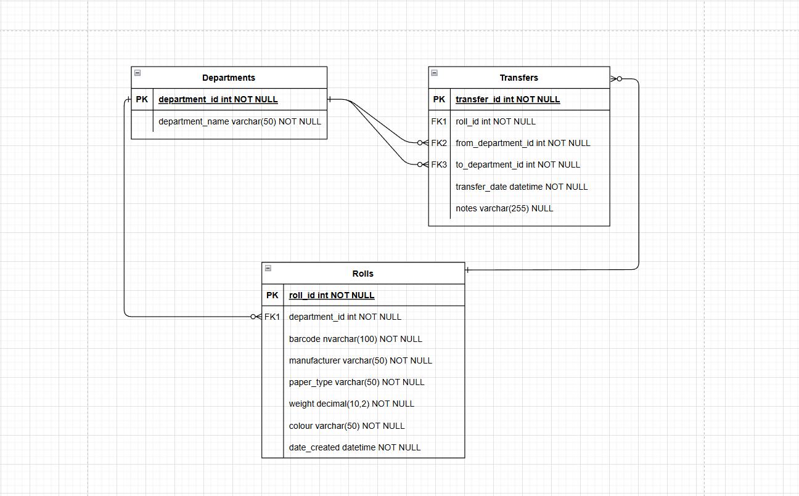
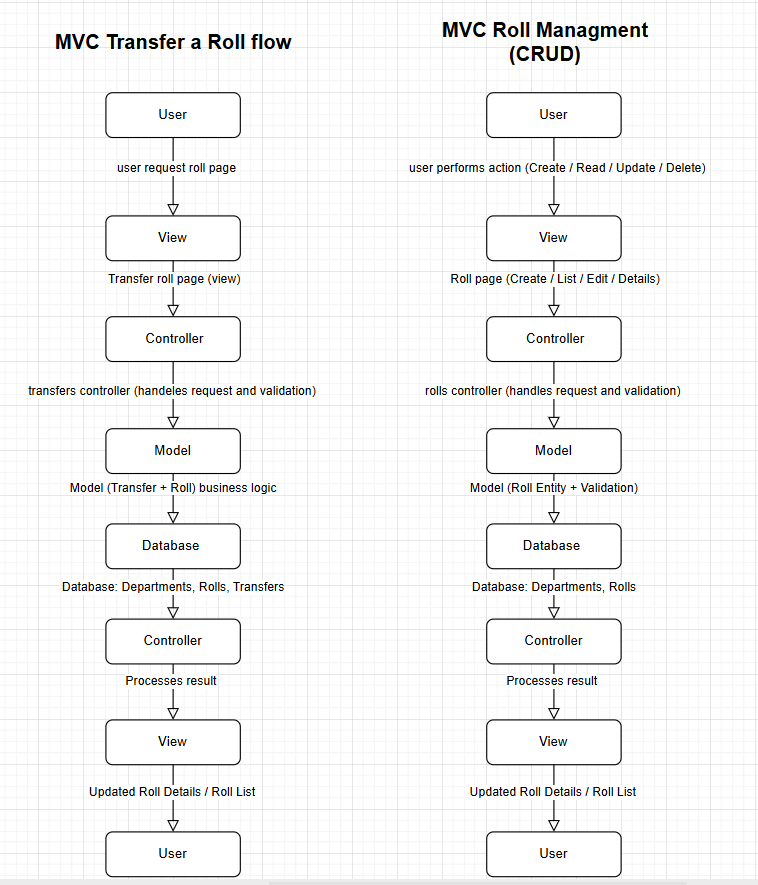
MVC Application Flow
The project was structured around the MVC pattern. The View handles the user interface, the Controller processes requests and validation, and the Model handles the business logic and data structure.
Separate MVC flows were designed for the main business process of transferring a roll as well as general CRUD roll management. This helps keep the application modular and easier to maintain.
Use Case Diagram
The use case diagram focuses on the user’s interaction with the system. The main actions include adding a roll, viewing rolls, editing roll information, deleting a roll, and transferring a roll between departments.
This diagram helps communicate the main functions of the system at a high level without going into implementation details.
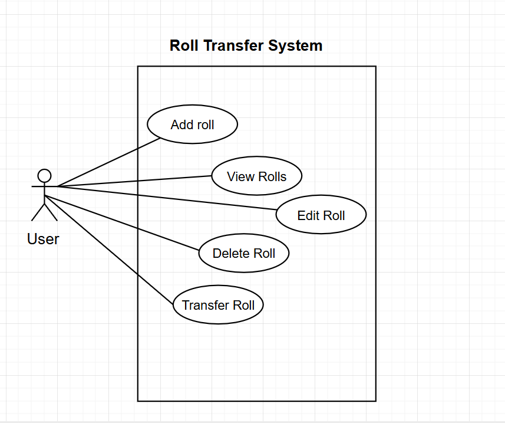
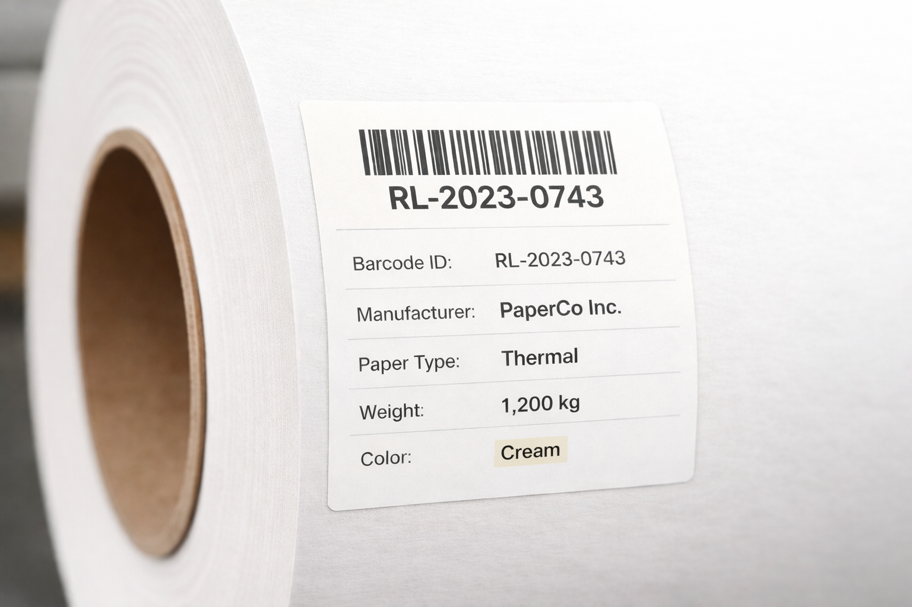
Barcode Tag for Roll Identification
A barcode tag was also designed as part of the system concept. This tag would be attached directly to the paper roll and scanned by operators to identify the roll quickly.
The label focuses only on physical roll details such as barcode, manufacturer, paper type, weight, and colour. Internal department tracking is intentionally managed inside the application UI instead of being printed on the label.
UI Mockup and Visual Layout
A UI concept was created to show how the system could look from the user’s perspective. The design includes pages such as the roll list, add roll form, transfer page, and roll details screen.
The focus of the UI was clarity, ease of use, and a clean industrial/business feel that fits the project context.
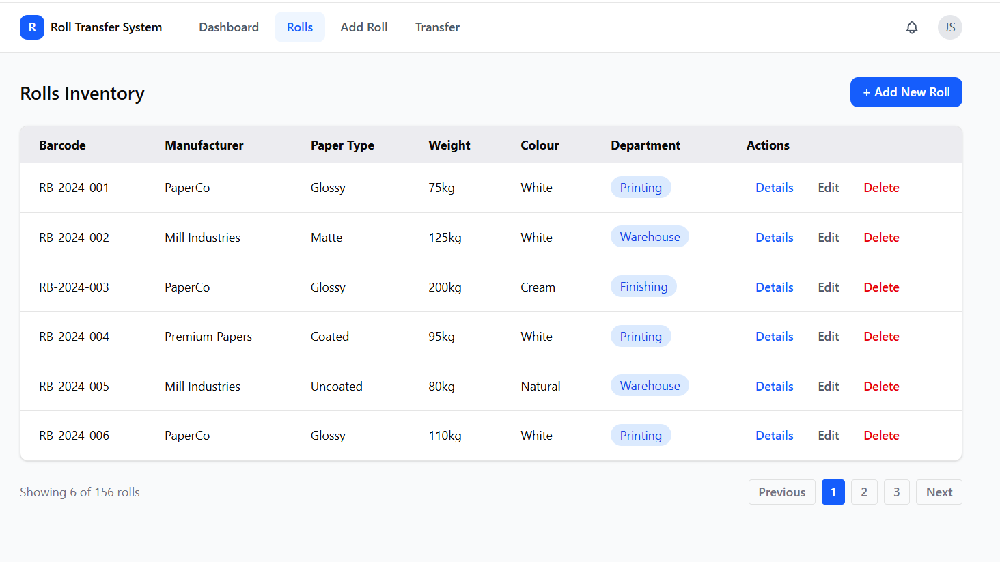
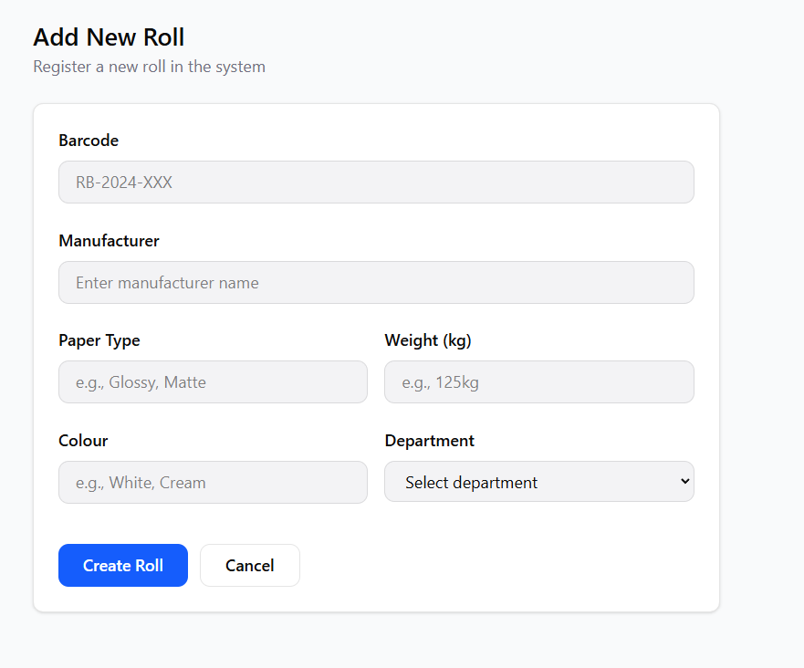
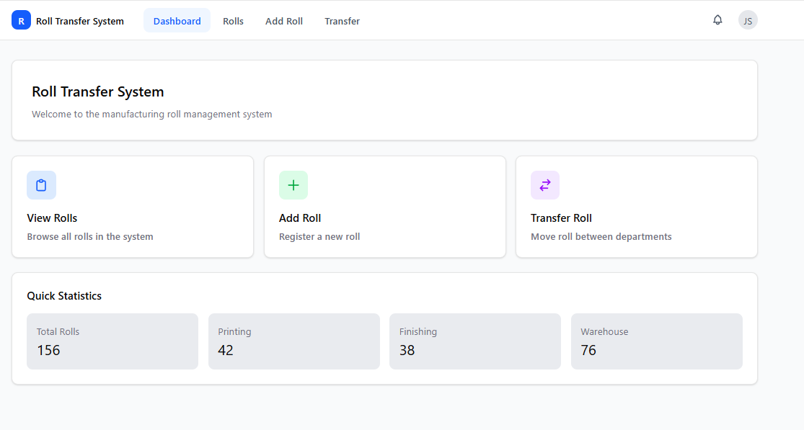
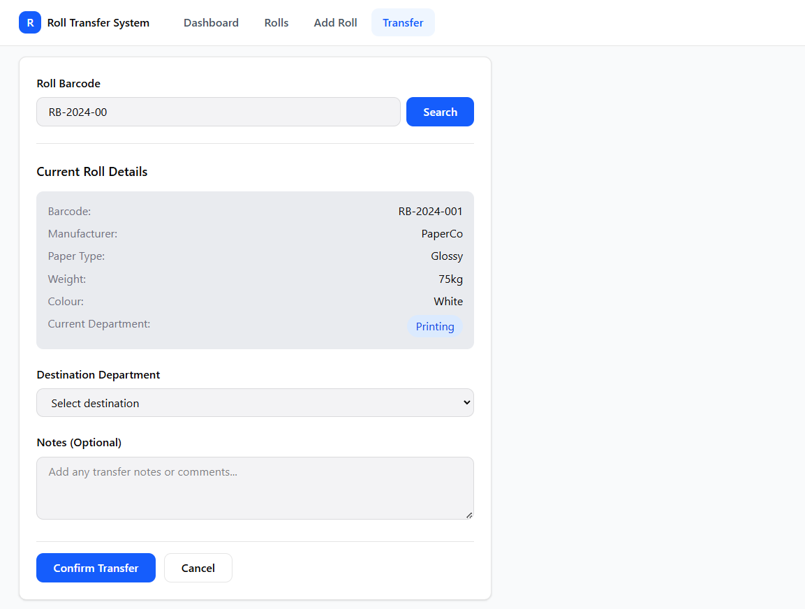
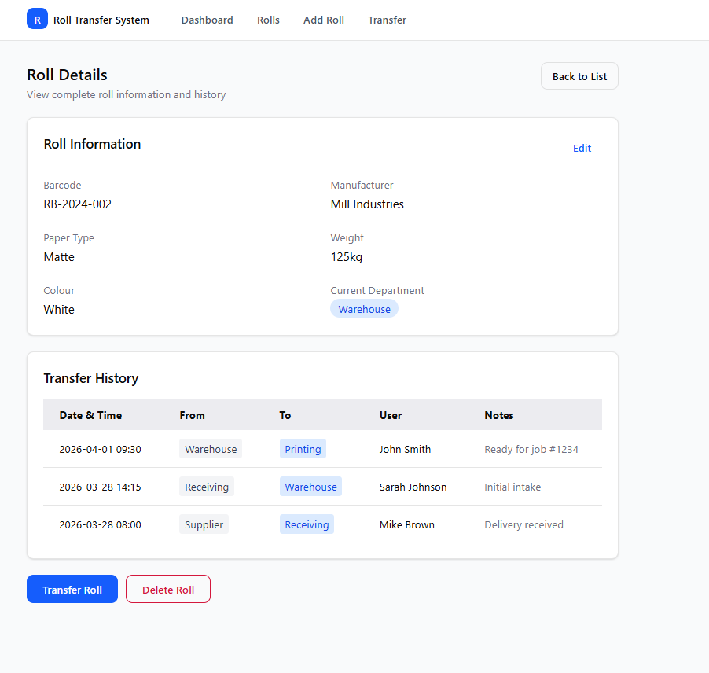